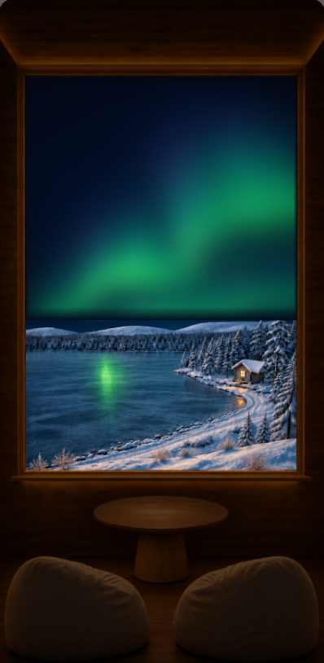

v1.0.0 · 2026-11-24 · BB-SCREEN:space / gaze / edit · D005/D028/D029/D030 보존
이전: 영상이 막히면 정지, 호수의 좁고 밝은 세로 불빛, 상판 아래에 걸친 받침.
변경: 원본 하늘을 Canvas로 천천히 이동·변형하고 호수에 가로 잔물결 반사. 화분 받침은 상판 가운데.
영상 자동 재생·디코더에 의존하지 않습니다. 시스템 동작 줄이기에서는 고정 장면을 표시합니다. 화면 숨김·화면 밖·편집 시 중지하고 복귀하면 재개합니다.
웹·Android 개발 소스 동기화. 실제 Canvas 픽셀과 생명주기·기기 이미지 브리지 검사 통과. 새 APK/IPA와 실기기 확인 전입니다. 아래 화분은 접점 설명용 간이 모형이며 앱은 기존 화분 사진을 사용합니다.

가로 중심 50%, 작은 화분 래퍼 중심 72.4%, 너비 16%. 받침 접점 약77.9%. 이전 자동 기본값만 읽을 때 보정하며 수동 이동·크기와 성장 기록은 보존합니다.